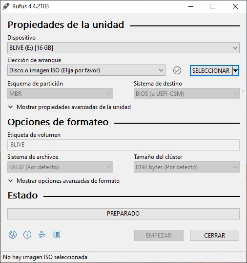
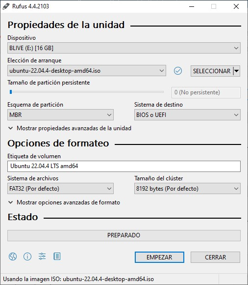
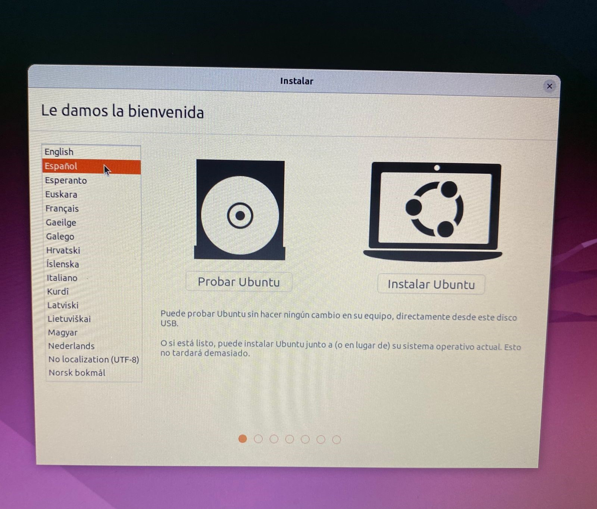
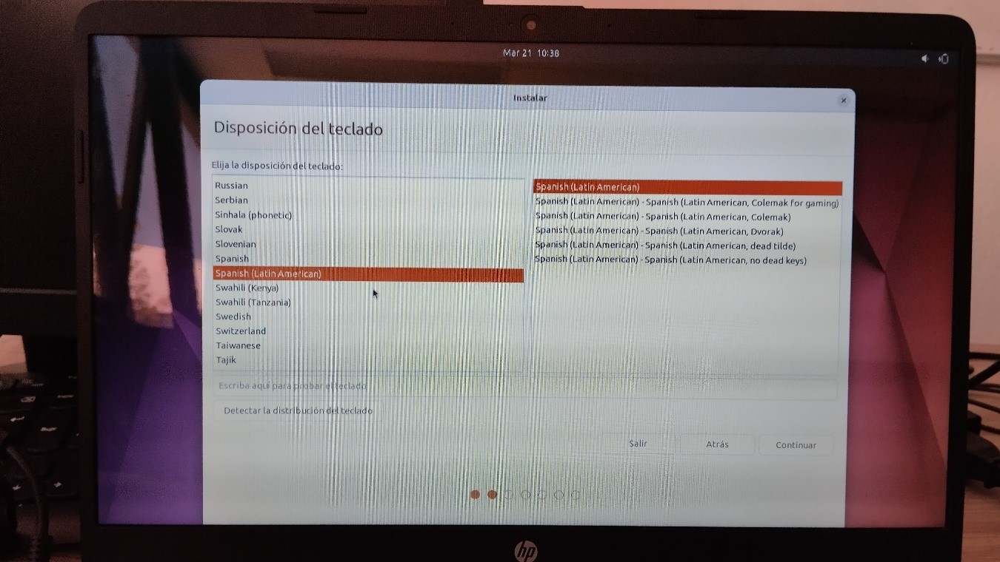
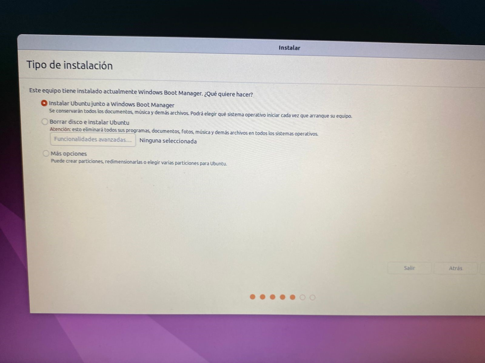
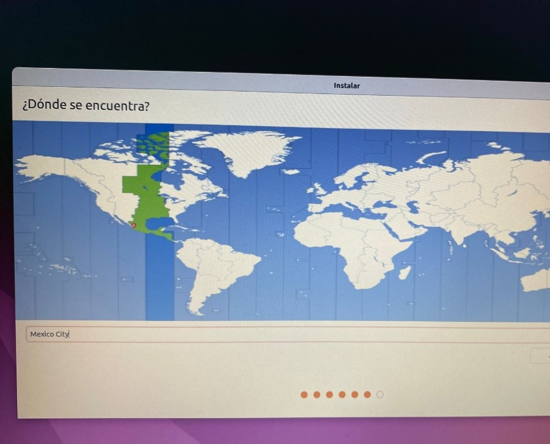
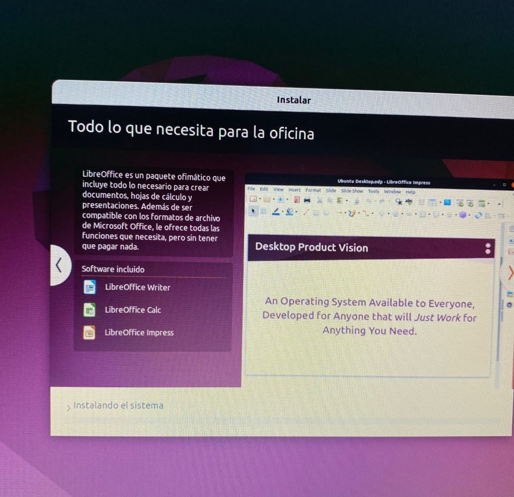
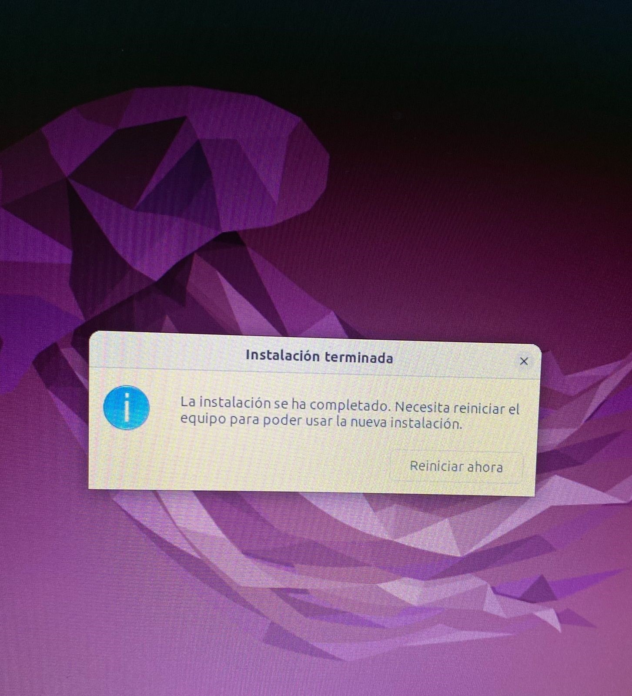
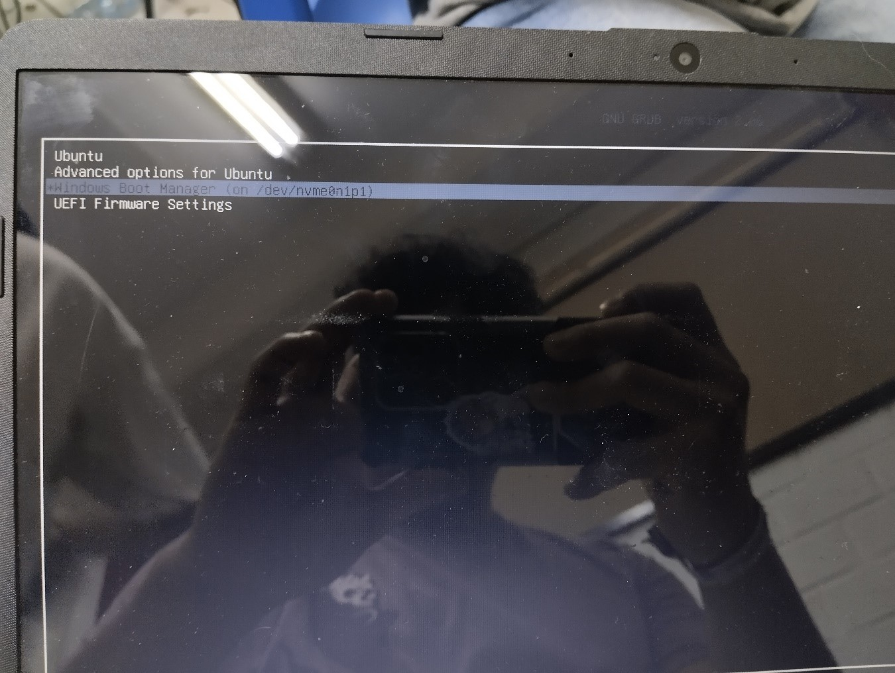

En el presente documento se hablará sobre qué es un binomio y por qué se usaría en una PC.
El arranque dual se consigue instalando los dos sistemas operativos en el mismo ordenador, en particiones o discos duros diferentes, y eligiendo cuál de los dos queremos arrancar desde un gestor de arranque. Debemos tener en cuenta que, si creamos una partición para instalar Windows por un lado y Linux por otro, si el disco duro deja de funcionar, ninguno de los sistemas operativos funcionará, ya que, al crear una partición, hemos dividido la capacidad total en 2 unidades. Para evitar quedarnos completamente tirados si Windows o Linux deja de funcionar, y poder tener la posibilidad de recuperar los datos de una u otra unidad, lo mejor que podemos hacer es instalar los sistemas operativos en discos duros diferentes.
Si tenemos en consideración las altas capacidades de almacenamiento de las que disponen la mayoría de las unidades de disco actuales, este es un método más que eficiente. Además, utilizando un gestor de arranque, tenemos la posibilidad de elegir el sistema operativo con el que deseamos trabajar cada vez que encendemos nuestro ordenador. Quizá lo más complicado o engorroso de este método sea la configuración inicial del arranque dual.
Hacemos una memoria booteable con Linux Ubuntu usando Rufus.
Seleccionamos la imagen iso de Ubuntu previamente descargada y damos a empezar sin mover cualquier otra opción.
Selecionamos instalacion.
Seleccionamos el idioma.
Y en este punto le damos a la opción de instalar junto con Windows y seguimos con la instalación normal.
Seleccionamos las región de horaria.
Y esperamos a que se instale
 Y una vez terminado nos tendrá que aparecer lo siguiente indicando que el binomio se hiso de manera correcta.
El usar un binomio con dos o más sistemas operativos nos permite usar las características de dichos sistemas operativos en un mismo dispositivo sin cambiar perder archivos o programas que nos e puedan ejecutar el otro sistema operativo. En lo personal fue un poco mas sencillo ya gracias a la opción que da Ubuntu para hacer la partición automáticamente por lo que no hubo mayor problema con su instalación, aunque si se tiene que tomar en cuenta el almacenamiento en disco a la hora de hacer la partición o pueden haber problemas de rendimiento.